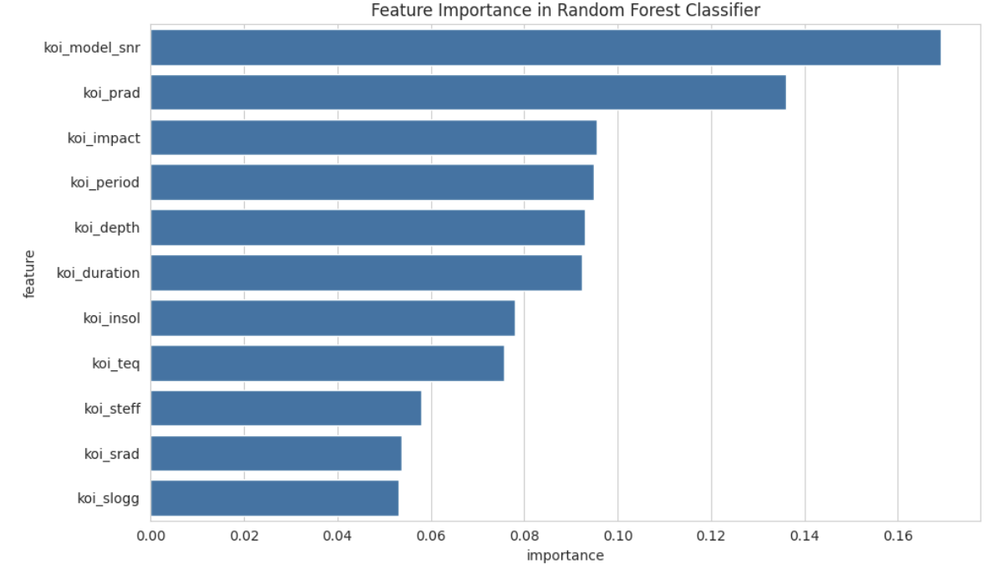
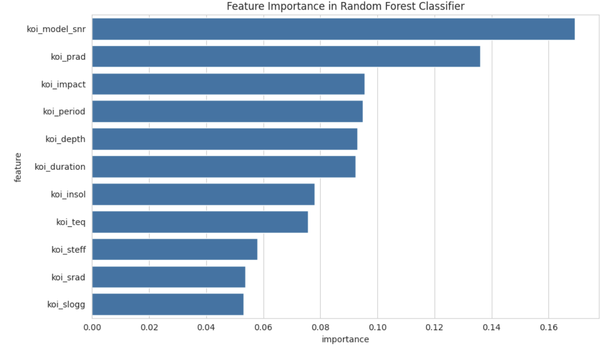

Pooja Sukhdeve — Portfolio
<h1>Hey there — I’m <strong>Pooja Sukhdeve</strong></h1>
<p class="lead">Software Developer & Data Engineer — Accessible visualizations · Cloud-native apps · Full-stack solutions</p>I build reliable, scalable software that turns data into useful experiences — from AWS-powered cloud systems to interactive Python tools and full-stack web apps. My work focuses on accessibility, clean architecture, and production-ready code that solves real user problems.
<a class="btn-primary" href="#projects">Glance at my work</a>
<a class="btn-outline" href="mailto:poojasukhdeve06@gmail.com">Contact me</a>
</div><!-- Replace with your image or avatar -->
<img src="Images/portrait.png" alt="Pooja portrait" style="width:320px;max-width:100%;border-radius:12px;display:block;">About Me
Hi — I’m Pooja Sukhdeve. I’m a Master of Science in Computer Science candidate at Boston University specializing in software development, cloud computing, and data-driven engineering. I build reliable, scalable, and user-focused applications — from AWS cloud solutions and CI/CD pipelines to full-stack web platforms and accessible Python tools.
I enjoy turning ideas into well-designed systems through clean architecture, efficient code, and thoughtful design. With experience across front-end, back-end, and data layers, I create end-to-end solutions that integrate APIs, improve performance, and deliver user impact.
I’m available for internships, full-time roles, and research collaborations.
<!-- Example: a short looping mp4 or replace with PNG/JPG -->
<video autoplay loop muted playsinline class="about-video">
<source src="Images/about_sec.mp4" type="video/mp4">
<!-- fallback image -->
<img src="Images/about_illustration.png" alt="about illustration" />
</video>Services
<div style="text-align:center"><img src="Images/1.png" style="height:72px;width:72px;border-radius:50%;background:#fff;padding:6px;"/></div>
<div class="title">Data Analytics & Visualization</div>
<p>Data wrangling, predictive modeling, dashboards, SHAP explainability, and actionable insights for stakeholders.</p><div style="text-align:center"><img src="Images/3.png" style="height:72px;width:72px;border-radius:50%;background:#fff;padding:6px;"/></div>
<div class="title">Software & Web Development</div>
<p>Full-stack development (React, Node), API integration, responsive UIs, and production deployments.</p><div style="text-align:center"><img src="Images/4.png" style="height:72px;width:72px;border-radius:50%;background:#fff;padding:6px;"/></div>
<div class="title">Cloud & Infrastructure</div>
<p>AWS-based solutions, CI/CD pipelines, containerization, and system performance improvements.</p>Selected Projects
Exoplanet Data Analysis with SHAP
Leveraged Random Forest and Gradient Boosting models to analyze exoplanet datasets (~75% accuracy). Applied SHAP for model interpretability and scientific insights.
 

Netflix Content Dashboard (Tableau)
Interactive visualization analyzing content trends, genre distribution, and regional differences over time.

Chatalogue — University Chatbot
Tkinter · SQLite · Natural-language parsing · Multithreaded UI A campus chatbot that answers class and campus queries with a responsive interface and optional OpenAI integration.
Technical Skills
- Languages: Python, R, JavaScript, TypeScript, SQL, Java, PHP
- Web: React, Node.js, Angular, HTML5, CSS3, Bootstrap
- Data & Viz: Pandas, NumPy, Matplotlib, Seaborn, Tableau, Power BI, SHAP
- Cloud & Infra: AWS, Docker, Kubernetes, Jenkins, CI/CD
- Tools: Git, GitHub, Jupyter, SQLite, Firebase
Contact
Feel free to reach out — I’m available for internships, full-time roles, and research collaborations.
- Email: poojasukhdeve06@gmail.com
- GitHub: poojasukhdeve-project
- LinkedIn: Pooja Sukhdeve